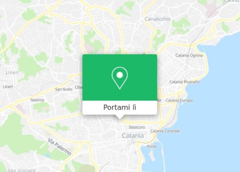
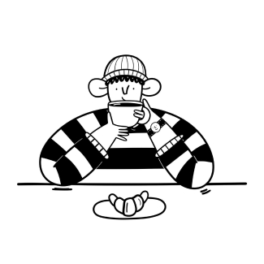

Inaugurazione 1 Maggio 2024 ore 18.00
Accademia di Belle Arti di Catania
Via Raimondo Franchetti (ct)
"Immergersi in un mondo dove la creatività non conosce confini."
Laboratorio bambini


Il laboratorio creativo per bambini è un'avventura artistica pensata per stimolare l'immaginazione e la creatività dei più piccoli.
Attraverso attività manuali, disegno e pittura, i bambini avranno l'opportunità di esplorare diverse tecniche artistiche in un ambiente divertente e accogliente.
Guidati da istruttori esperti, impareranno a esprimere le proprie idee e emozioni creando opere d'arte uniche.
Questo workshop è progettato non solo per sviluppare le abilità artistiche, ma anche per incoraggiare il lavoro di squadra, la fiducia in sé e l'apprezzamento per l'arte. Un'esperienza educativa e coinvolgente, perfetta per liberare la fantasia e il talento di ogni bambino.